En un mercado centenario de San Salvador, un grupo de mujeres sostiene, generación tras generación, el voto que sus antepasadas hicieron alguna vez al Sagrado Corazón de Jesús.
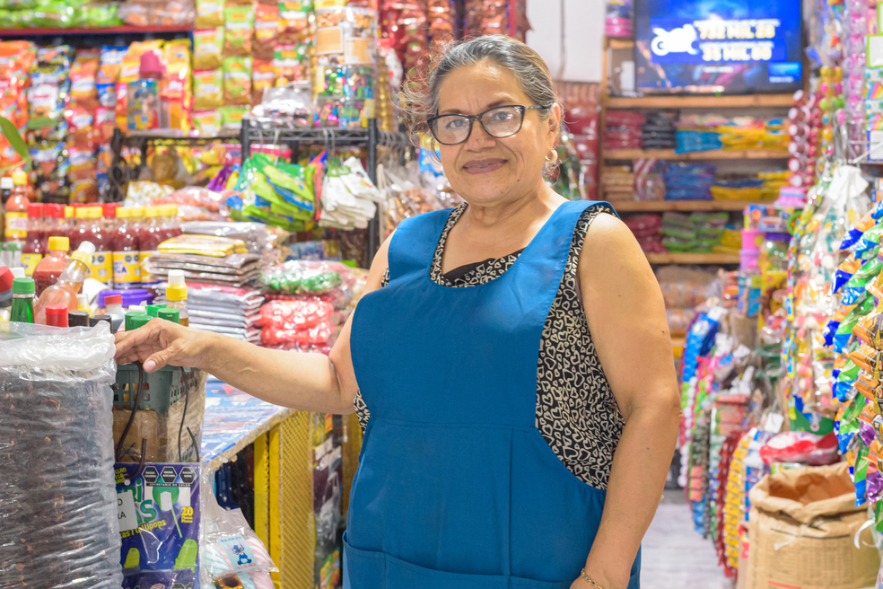
Detrás del mostrador de un puesto temporal, rodeada de vitrinas llenas de dulces, confeti y todo lo necesario para una fiesta infantil, Guadalupe de Girón atiende a una clienta con una sonrisa que desafía al sótano húmedo del Edificio 9 del Mercado Central de San Salvador. Cincuenta y dos años en el mercado son una prueba de resistencia y, aunque su territorio se ha reducido a este rincón provisional, no pierde la esperanza de volver a su antiguo local.
En la madrugada del 2 de agosto de 2024, el Edificio 5, donde Guadalupe pasó gran parte de su vida, fue consumido por un incendio. El fuego dañó entre 80 y 90 de los 276 puestos del edificio, según el reporte oficial del Cuerpo de Bomberos — casi un tercio de todo el pabellón. El edificio permanece cerrado, inaccesible. Ocho meses después del incendio, la Alcaldía de San Salvador Centro confirmó a medios locales que el edificio sigue asegurado, pero que el municipio espera una inspección judicial antes de poder hacer uso del seguro. No se ha anunciado fecha de reconstrucción. Para las vendedoras, la burocracia suena a desalojo definitivo.
Unos días después del desastre, personal de la alcaldía guió a Guadalupe y a un grupo de comerciantes por lo que quedaba del pabellón calcinado. "No quedó nada, y lo poco que había, se lo llevaron", recordó Guadalupe, con una resignación que muerde. "Tocó empezar de cero. Pero al menos la imagen del Sagrado Corazón de Jesús no se quemó."
La explicación oficial del Cuerpo de Bomberos de El Salvador fue que el incendio inició por un cortocircuito — una falla eléctrica, dicen las vendedoras, en un sistema que operaba con el mismo cableado antiguo desde que se construyó el mercado. La grasa de las carnicerías y la cera de las velas votivas fueron el combustible perfecto que redujo a cenizas buena parte del espacio — algo que el propio director municipal de Protección Civil confirmó en su momento: el sector afectado concentraba puestos de venta de grasas vegetales y animales, y de candelas.
Para las mujeres del Central, el Sagrado Corazón es el amo y señor de todos los mercados, y le atribuyen el milagro que permitió que el comercio informal floreciera en el barrio El Calvario. Según la memoria de las vendedoras de "los mercados de antes", sus antepasadas le hicieron una promesa jurada al patrón del mercado: si el santo les ayudaba a vaciar sus canastos y asegurar la venta del día, ellas le consagrarían treinta y tres días continuos de rezo.
Aquel pacto de supervivencia económica comenzó en la tierra, en el antiguo centro de abastos al aire libre conocido popularmente como "El Chiquero". En 1975, cuando la modernización de la época levantó los bloques de cemento del Mercado Central para ordenar las calles alrededor, el laberinto de concreto se construyó justo encima de ese suelo histórico. El mercado sepultó a "El Chiquero", convirtiéndolo en su sótano, y absorbió también otros mercados más pequeños — entre ellos La Compañía, donde comienza la propia historia familiar de Guadalupe. Por eso sus años ahí y los que lleva en el Mercado Central se cuentan como una sola cifra continua. Pero la promesa migró intacta hacia todo el Mercado Central.
Guadalupe recuerda su propia versión. "Nosotras llegamos hace cincuenta y dos años al mercado de La Compañía. Ahí tenía un puestecito mi mamá. Desde ahí venía la tradición", cuenta. Tenía siete u ocho años cuando empezó a asistir a los rezos — no por fe, sino por el sorbete, los tamales y los dulces que repartían al final. Las rezadoras de entonces eran estrictas: a quien no rezaba, no le daban de comer. Su madre nunca pudo pagar un día de misa —"apenas teníamos para comer", recuerda Guadalupe— así que ella y sus hermanas iban solo a pedir el refrigerio, mientras las familias con más recursos costeaban la celebración completa.
Ese recuerdo de carencia es lo que hoy guía su manera, más generosa, de vivir la tradición. "Yo les digo, compremos y hay que dar, porque ya pasamos por eso", explica. "Aquí viene gente que quizás lo que come en la misa será la única comida que tendrá en el día." Muchos fieles recorren varias misas el mismo día, guardando tamales en una bolsa para llevárselos a los nietos.
Desde entonces, la devoción se multiplicó por todo el complejo, y cada comité adoptó su propia imagen como escudo protector. Así nacieron los comités religiosos en cada edificio del Mercado Central — una estructura que, según las propias vendedoras, se repite en otros mercados del país, aunque fue aquí donde la vieron nacer. Las vendedoras se convirtieron en guardianas de una memoria abrumadoramente femenina, transmitida de madres a hijas a través de rezos que van del primero de junio al tres de julio. Rezos que se volvieron misas. Hoy, mientras el Edificio 5 sigue clausurado y su santo permanece resguardado en la cercana iglesia de El Calvario, Guadalupe y las mujeres del sótano se preparan para darle continuidad a la fiesta fundacional del mercado. El dinero escasea en el sótano del Edificio 9, pero su fe no se rompe.
"Había un sector de pescadores que tenía su propio corazón, y otro de especias. Nosotras teníamos otro corazón en el Edificio 5. Entraron también otros corazones. Así, a cada comité le fueron dando un Corazón de Cristo. Todos fueron donados", recuerda Guadalupe.
Días antes de mi conversación con Guadalupe, durante una de mis visitas al mercado, descubrí por qué la presencia del Sagrado Corazón ahí era mucho más que un símbolo religioso. Según las vendedoras, el Central dejó atrás sus días de gloria, pero sus pasillos nunca están vacíos. En un día normal de compras, cualquier pasillo te puede poner de frente con una misa.
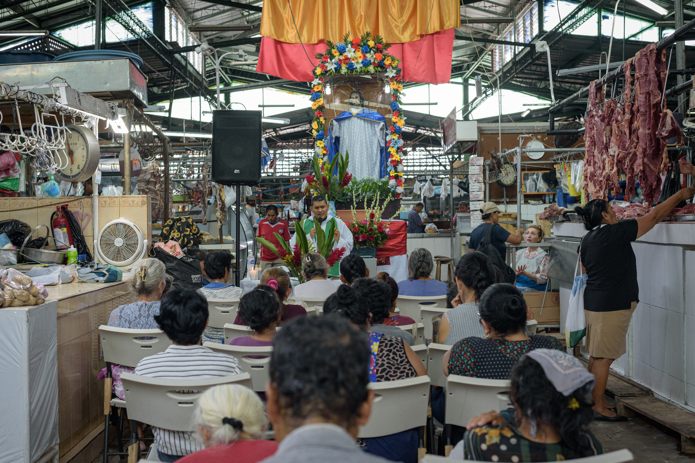
El Edificio 6, el de las carnes, se había convertido en un templo. Las paredes eran hileras de carne de res colgada, básculas, rótulos de precios, gente comprando, llenando los pasillos, rodeando el espacio consagrado donde un grupo de fieles — la mayoría mujeres — escuchaba al padre Jorge Cartagena, de la iglesia El Calvario. Una imagen del Sagrado, sobre un altar elevado, presidía la ceremonia.
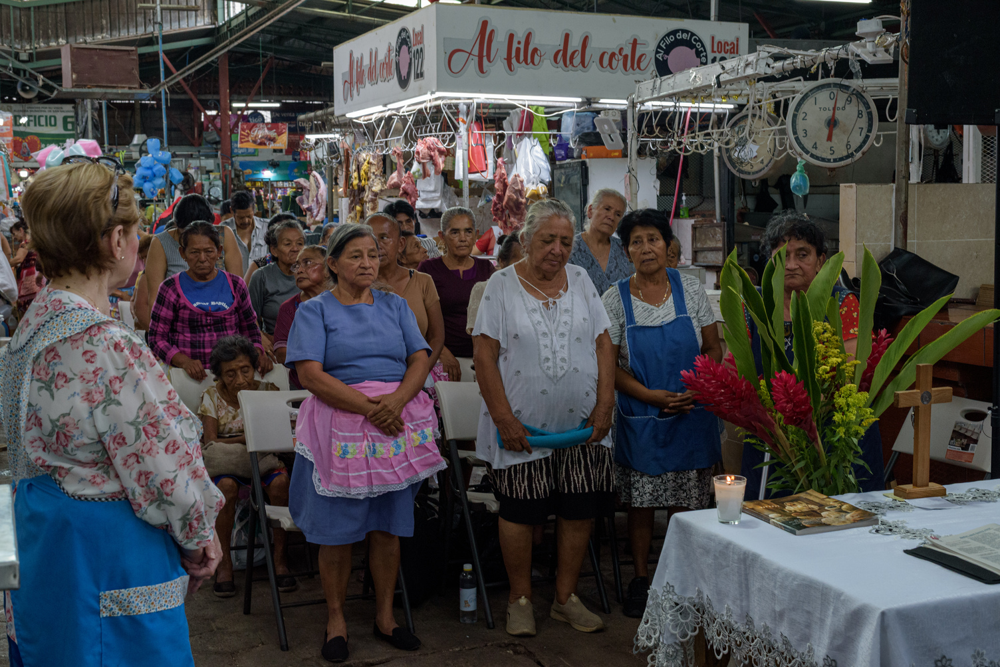
"No se puede entender El Calvario sin las vendedoras."
Así lo dice el padre Elder Romero, también sacerdote de la iglesia. Reconoce que la costumbre de que los mercados se asienten frente al atrio de una iglesia no es exclusiva de este barrio, pero la historia da fe del vínculo entre El Calvario y sus comerciantes: el barrio ha sido, durante siglos, el corazón comercial de San Salvador, y la iglesia siempre ha sido el canal por el que han buscado una bendición para sus ventas.
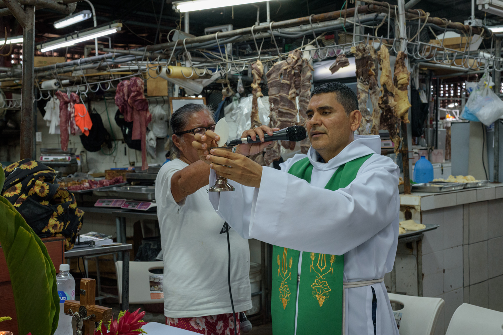
Mientras se celebra la Eucaristía, la música de los puestos vecinos se apaga. El comercio sigue su curso. La economía sagrada del mercado se manifiesta. El puesto de carne que es sede de la misa le pertenece a Blanca Duarte, quien lleva cincuenta y un años en el mercado. Ella recuerda que, de niña, asistía a los rezos para pedir dulces — el mismo umbral por el que entró Guadalupe a la fe, aunque las dos mujeres, sin parentesco entre sí, no se conocían entonces.
"Yo recuerdo que hacíamos fila para eso. En la medida que uno crece, se da cuenta de que es la fe. Quizás cuando boten este mercado ya no nos van a dejar celebrar al Sagrado Corazón. Ha habido señoras en el mercado mayores de cien años que ya celebraban esto, y lo hacían en los mercados viejos — viene de generación en generación."
En una visita posterior, cerca del final de las celebraciones al Sagrado, bajé al sótano del Edificio 9. Recorrí las gradas y llegué a los primeros puestos. Cacerolas y peroles de aluminio colgados. Un puesto sin vendedora. Otro con una vendedora de edad avanzada, sentada en una silla de plástico, bostezando a la espera de clientes que no llegaban.
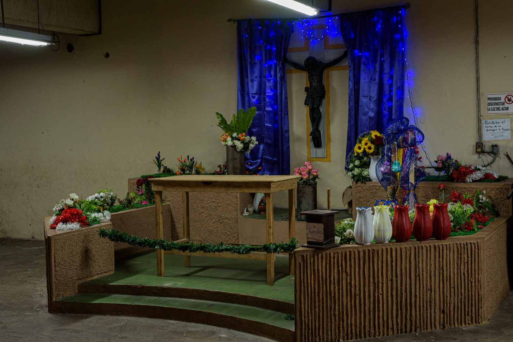
Un grupo de mujeres cubre el altar del Cristo Negro instalado en el subsuelo del Central. La imagen nació de la devoción de las vendedoras fundadoras del mercado. Se le celebra cada 15 de enero, aunque hoy funciona más como una marca de origen que como un objeto de devoción activa. La figura es una réplica de la que está en Guatemala: sin adornos, austera, oscura. Verla me lleva, inevitablemente —por mi formación en historia de las religiones— a pensar en Tezcatlipoca, el Espejo Humeante, la deidad mesoamericana que pone a prueba a los hombres y luego se retira, dejando solo su señal. La asociación no pretende explicar el origen del Cristo Negro, pero sí ilumina un contraste: mientras la devoción al Sagrado Corazón encontró nuevas generaciones de comerciantes que la sostuvieran, la devoción al Cristo Negro parece haberse quedado sin herederos.
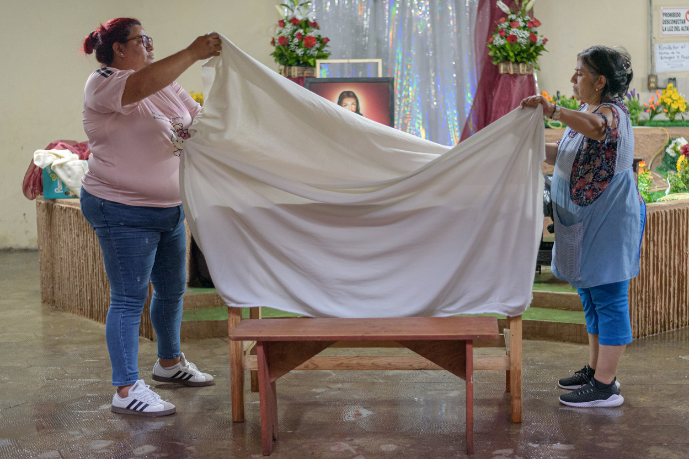
El abandono no es solo percepción. "Este lugar pasa solo. Si usted ve las caras de la gente, nota la desesperanza. Hay gente que hasta se queda dormida en sus puestos, porque no llegan clientes", dice Guadalupe. Cuando el pabellón cerró, no todas las vendedoras terminaron en el mismo sótano: algunas se fueron a locales afuera, a otros edificios, con familiares. Los clientes de siempre dejaron de buscarlas. "La gente llegaba a preguntar por la señora fulana y ya no estaba. Dejaron de buscarnos porque no sabían que estábamos aquí", cuenta. Algunas, dice, sobreviven porque lograron conservar a algunos de esos clientes de años.
"Los puestos que ve allá estaban antes en la Plaza San Vicente — los trasladaron para acá. En los años del Mundial, aquí no cabía ni un alma. Mírelo ahora: muerto", agrega Guadalupe. La propia Alcaldía confirmó, en los días posteriores al incendio, que la Plaza San Vicente de Paul fue una de las opciones de reubicación —propuesta por las mismas vendedoras—, junto con el área de parqueo entre los Edificios 2 y 3, y el sótano donde trabajan hoy.
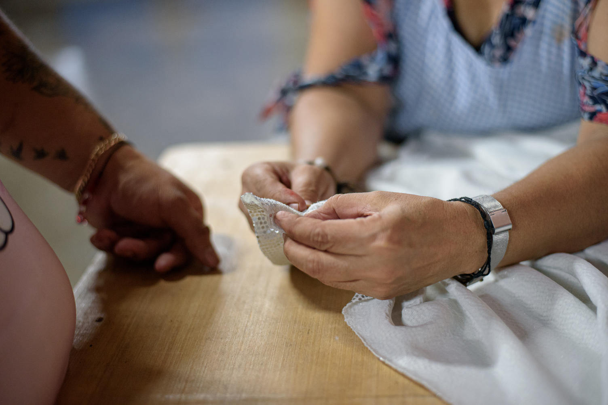
Trabajadores del mercado interrumpen para lavar los pisos de la zona. Las mujeres descansan. Comienzan los preparativos para el día siguiente, el cierre de las celebraciones: los tamales, el sorbete, las bebidas.
La iglesia El Calvario ha prometido llevar una imagen del Sagrado Corazón de Jesús para el día siguiente, 3 de julio. Su propia imagen sigue en la iglesia, en restauración, así que la parroquia prestará otra para la ocasión. Con una imagen prestada, las mujeres ofrecerán la última misa.
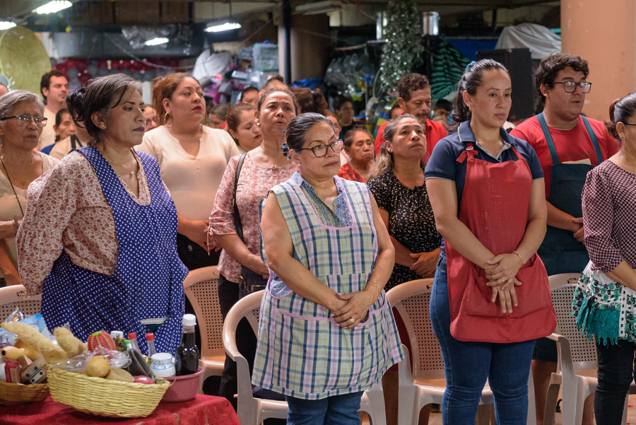
Regreso un día después; la Eucaristía está pactada para el mediodía. Llego temprano para conversar con Guadalupe y las vendedoras del Edificio 5, que esperan al párroco de El Calvario, quien en ese momento oficia otra misa en el mismo Edificio 9, en el piso de arriba del Cristo Negro. Los fieles ya llenan las sillas de plástico. Un ministerio de alabanza pone la música; pop cristiano marca el ánimo. No alcanzó el espacio frente al altar, así que la gente se acomoda más atrás, pero el sonido llena el sótano mientras los compradores los miran con curiosidad y sorpresa. El sacerdote llega corriendo.
Deja un maletín negro sobre la mesa del altar. Lo abre y saca una Biblia, el misal y el cáliz: los elementos de la comunión, que se transformarán en cuanto el sacerdote los bendiga.
La misa es solemne. En su homilía, el padre Romero habla con una voz cargada de nostalgia y memoria. "Este es un momento para recordar nuestros orígenes, para sentirnos orgullosos de nuestra fe — incluso aquí, en medio de la venta, la compra, el murmullo de estos pasillos", dice. Como en cada celebración que presencié dentro del mercado, la mayoría de los asistentes son mujeres — las mismas que sostienen sus casas y su vida diaria, y que hoy también cargan la esperanza de ver reconstruido el Edificio 5. "Por eso estamos aquí — porque el Sagrado Corazón de Jesús nos ha respondido antes, y confiamos en que lo hará de nuevo, para que las comerciantes puedan volver a sus puestos, para que por fin obtengan la respuesta que han estado esperando", dice el padre Romero.
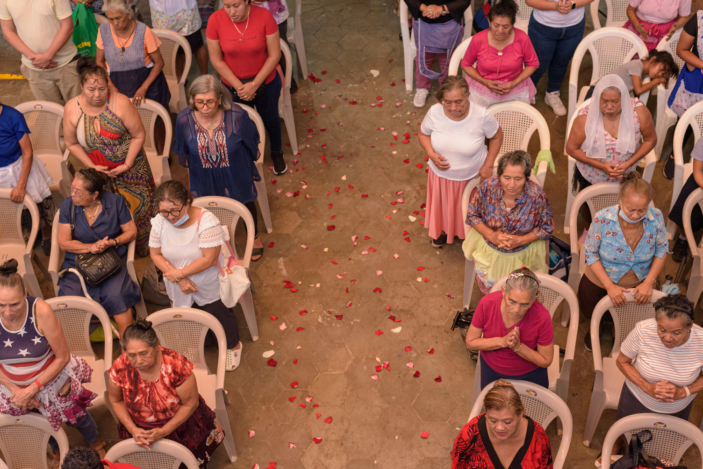
Antes había más recursos para sostener la fiesta con otro esplendor. "Teníamos un altarero que se llamaba Santiago. Ya murió. Cobraba quinientos colones en aquel tiempo, y en esa época había dinero para eso. Ya no", dice Guadalupe. Los altares de antes eran obra de artesanos: figuras de madera, un arca de Noé en miniatura, orquestas de cumbia que tocaban después de las misas — su propia madre, recuerda, hacía altares todavía más bellos que los de ella. Hoy el altar del sótano es, en sus propias palabras, "sencillísimo".
"Tengo sesenta y dos años — imagínese desde cuándo hacemos esto", dice Guadalupe. Antes solo se rezaba el Rosario; la misa llegó después, cuando la parroquia de El Calvario empezó a apoyar la celebración con sacerdotes fijos. Antes de eso, los rezos se acompañaban con música de cuerdas, con viejitos que llegaban con sus guitarras.
No todas las guardianas de la tradición siguen presentes. "Falta Alicia, y la niña Vicenta también. Ya están grandes, algunas enfermas, otras recién operadas, así que dejaron de venir", dice Guadalupe. Su hermana es, junto con ella, de las más jóvenes del grupo; otras mujeres se han ido sumando con los años, y muchas también se congregan en la iglesia El Calvario.
La tradición se sostiene, en parte, desde la distancia. "Una que ha trabajado en el mercado quiere algo mejor para sus hijos — no quiere que se queden aquí. Pero nuestros hijos siempre colaboran: una de mis hijas pagó una misa, otra dio dinero para los refrigerios", dice Guadalupe. Entre quienes mandan ofrendas para la celebración hay familiares que ya salieron del mercado —una prima que ahora es doctora— y sobrinos que viven en Europa y preguntan cada año qué hace falta. La gente se va, dice Guadalupe, pero sigue presente de alguna forma.
Para Guadalupe, lo que está en juego va más allá de un solo edificio. "La Semana Santa se celebra en todo el mundo; las fiestas agostinas son de la Alcaldía. Pero si cierran el mercado, el Sagrado Corazón pierde su templo. Él es el patrón de todos los mercados — lo va a encontrar donde vaya. Si el mercado desaparece, ¿qué hacemos con todas esas imágenes? Por eso luchamos, por eso seguimos rezando, porque las cosas están cambiando, todo se está modernizando, y la gente ya no quiere venir al mercado", pregunta y reflexiona.
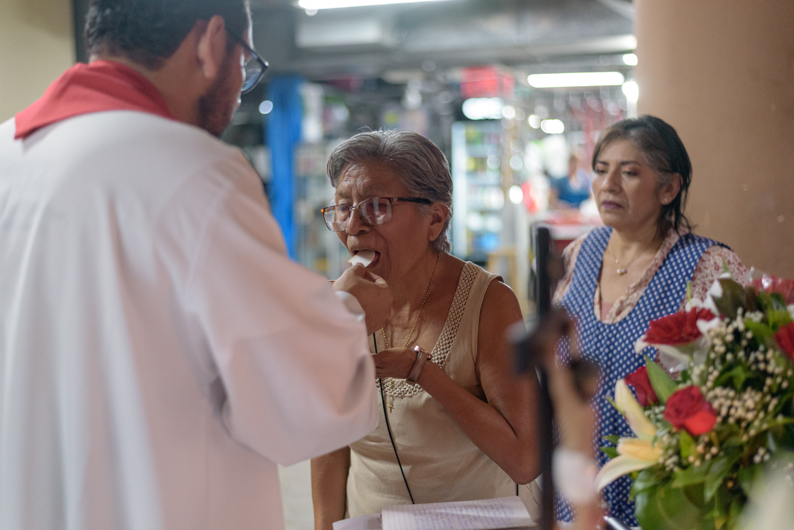
Guadalupe y las vendedoras han reabierto su antiguo pacto con el Sagrado Corazón de Jesús. Su fe navega sobre la incertidumbre institucional sembrada por la Alcaldía — un silencio, y una petición de recuperar su antiguo espacio, que todavía no ha sido respondida. Guadalupe concluye: "Nosotras venimos de tradición en tradición. Nuestra imagen del Sagrado Corazón está en la iglesia El Calvario. La hemos dejado ahí hasta tener nuestro edificio de vuelta. Dios quiera que sea pronto, porque esto nos ha unido — todas estamos pidiendo regresar. Las misas siempre han sido muy solemnes, pero hoy es cuando más hemos rezado. A dos años del incendio seguimos sin respuesta. A una sola voz, todas pedimos volver al Edificio 5."
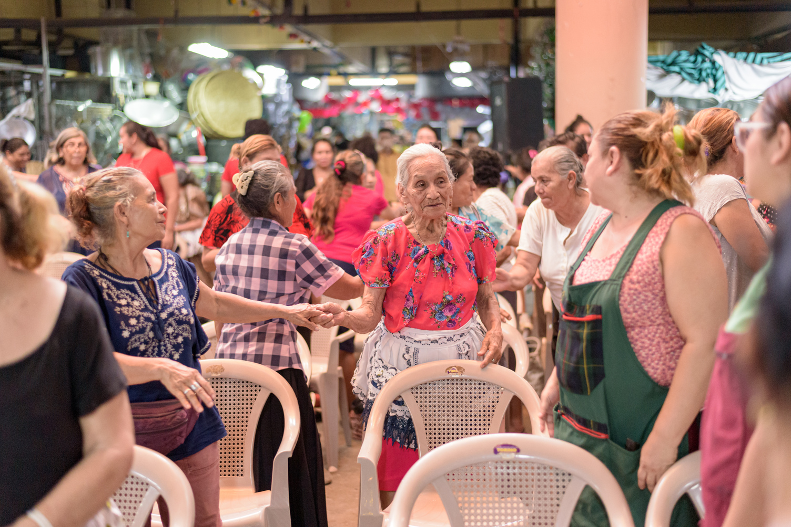
La Eucaristía ha terminado. El reloj ya corre hacia la fiesta del próximo año. Las mujeres empiezan a despejar el área, a devolverla a como estaba. El Cristo Negro espera recuperar su altar. Cada quien vuelve a su puesto. Guadalupe también se va, con la esperanza renovada de que las misas del próximo año al Sagrado Corazón la encuentren de vuelta en el Edificio 5.
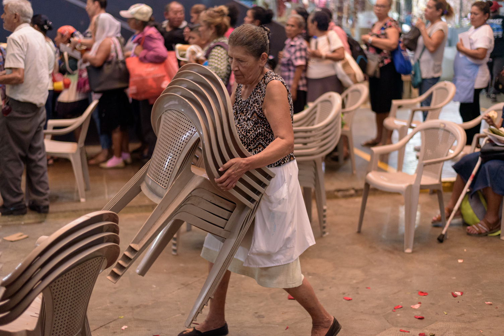